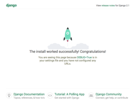

Django

Django — свободный фреймворк для веб-приложений на языке Python, использующий шаблон проектирования MVC. Проект поддерживается организацией Django Software Foundation.
Сайт на Django строится из одного или нескольких приложений, которые рекомендуется делать отчуждаемыми и подключаемыми. Это одно из существенных архитектурных отличий этого фреймворка от некоторых других (например, Ruby on Rails). Один из основных принципов фреймворка — DRY (англ. Don't repeat yourself)
Также, в отличие от других фреймворков, обработчики URL в Django конфигурируются явно при помощи регулярных выражений.
Для работы с базой данных Django использует собственный ORM, в котором модель данных описывается классами Python, и по ней генерируется схема базы данных.
Некоторые возможности Django:
- ORM, API доступа к БД с поддержкой транзакций
- встроенный интерфейс администратора, с уже имеющимися переводами на многие языки
- диспетчер URL на основе регулярных выражений
- расширяемая система шаблонов с тегами и наследованием[